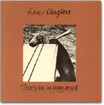
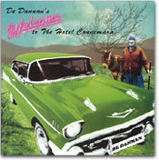

|

■なぜ、カヴァーなのか？
Jポップではこのところカヴァー作品が目白押しだ。原由子の『東京タムレ』、中森明菜の『ZERO アルバム〜歌姫2』といった懐かしの歌謡曲やポップスのカヴァー・アルバムが話題を呼び、椎名林檎も5月にワールドワイドな名曲カヴァー集で復帰する。ほぼ1年前、井上陽水が「コーヒー・ルンバ」を含む昭和歌謡カヴァー集を出してからだろうか、この路線がにわかに活気づいているようだ。ウルフルズとRe:Japanの「明日があるさ」をはじめ、ここ数年シングル・ヒットしたカヴァー曲は数え切れない。また、オムニバスのトリビュート・アルバムという形でのカヴァーも後を断たない。そして、これは日本に限ったことでも今に限ったことでもない。
なぜ、カヴァーなのか？
カヴァーとは、原曲を異なるアレンジで演奏したもの。オリジナルと異なる演奏者によるものが多いが、本人によるセルフ・カヴァーもある。クラプトンの「レイラ」のアンプラグド（アコースティック）・ヴァージョンなどがそうだ。楽曲提供者が自分のアルバムの中やライヴで提供曲を歌ったり演奏するパターンもある。また、浜崎あゆみのようにリミックスによってヴァージョン違いのアルバムを何通りか作るというのも、セルフ・カヴァーの一種だろうか？（リミックスはとくに、本人だけの仕事じゃないし……）
いずれにしても、カヴァーする側の意識には、その曲へのいろいろな「思い」があるはずだ。たぶん一番多いのが〈リスペクト〉あるいは〈オマージュ〉、つまり敬意、尊敬、憧れの気持ち。セルフ・カヴァーだって、結局はその曲への愛着や思い入れが強いからそうするんだろうし。〈リスペクト〉はある一曲に向けられる場合もあるし、トリビュート・アルバム（敬意を捧げたアルバム）という形で、特定のアーティストに向けられる場合もある（昨年、アメリカという国家に捧げられたアルバムも出たっけ……）。ビートルズ（メンバー個々も含めて）、ボブ・ディラン、エルヴィス・プレスリー、ボブ・マーリー、ハンク・ウィリアムズ、アントニオ・カルロス・ジョビン、エルトン・ジョン……カヴァーされた曲の多さ、トリビュート・アルバムの種類や数の多さを考えると、彼らが世界中のミュージシャンたちからどれほど熱烈に〈リスペクト〉されているかがわかる。
カヴァーする意識の中には、〈リスペクト〉の他にもう一つ大きな核があると思う。〈自己アピール〉もしくは〈チャレンジ〉。オリジナルの曲を自分のスタイルで演奏し、印象的なものにしようとする挑戦。一度カヴァーすれば、「オリジナルよりいい」「オリジナルにはかなわない」「どちらもそれぞれいい」と、どう転んでも必ず比較評価される。それだけに覚悟がいる。カラオケで歌うのとはワケが違う。お金を払って聴いていただくモノを作る以上、ただ純粋な〈リスペクト〉だけでカヴァーはできないはずだ。「自分ならこんなふうに表現できる」「この曲は自分が演奏してもイケル」「自分の方がずっといい」……そこまで思っているかどうかわからないけど、そのくらいの自信がなくてはできないだろう。オリジナルの楽曲あるいは演奏者に対して、ある意味〈挑戦状〉を叩きつけるくらいの気迫がないとカヴァーなんてできない、とわたしは思う。そうでなければ、中途ハンパなコピーと同じだ。
コピーも基本は〈リスペクト〉。心からの敬意を表して、徹底的にいわゆる完コピ（完全コピー）をめざしたりする。中途ハンパはカッコ悪い。コスプレに通じるものがあるかもしれない。これも〈リスペクト〉と〈チャレンジ〉が同居する行為。ただ、コピーは所詮コピーであって、オリジナル以上にも以下にもなれない。なってはいけないのだ。没個性をめざすコピーと個性を主張するカヴァーは、心根はいっしょでも正反対の行為といえる。
基本的に楽譜を忠実に再現するクラシックの演奏は、同じ楽譜を見て演奏するからといってコピーではなく、それぞれが個性を光らせるという点で、むしろカヴァーに近い。ベートーヴェンの交響曲『運命』の有名な出だし、ジャジャジャジャ〜ン♪のところだけでも、指揮者やオーケストラによって全く違う演奏を聴かせる。もちろん、クラシックではカヴァーとは言わない。それを言い出したら、既成曲の再現演奏が主であるクラシックはカヴァーだらけということになってしまう。歴史あるウィーンのニューイヤー・コンサート。これまで様々な指揮者が棒を振ってきた「美しく青きドナウ」や「ラデツキー行進曲」を今年、小澤征爾が指揮したが、これをオザワによるカヴァーとはけっして言わない。カヴァーに近いものがあるとすれば、よくある「○○の主題による変奏曲」とか、ムソルグスキーのピアノ版「展覧会の絵」のラヴェル編曲によるオーケストラ・ヴァージョンなど、楽曲そのものについての話になるだろう。この手の今でいうカヴァー的な作法は、クラシックの中にも数多く見られる。
こうしてみると、カヴァーはポピュラー音楽特有のものでもなさそうだ。世界各地の伝承童謡や民謡、伝統音楽なども、しいて言えばコピーというよりカヴァーのくり返し。だからこそ、昔から全く変わらない形で残っているのではなく、何種類ものヴァリエーションを持ち、時代と共に変化して今に至っているのだろう。
伝承歌のヴァリエーションの一つに「替え歌」がある。祖国愛を歌った歌詞が、政治批判やシモネタになったりする。カヴァーというよりパロディー・ソングと呼ばれるこの類の歌は、現在のポピュラー音楽にもゴロゴロ転がっている。外国音楽のカヴァーがまったく関係のない母国語歌詞で歌われることもよくある話だ（というか、それが一般的）。モーニング娘。も手掛けたダンス☆マンによるダンス・クラシックスのカヴァーの数々も、お笑いの入った語呂合わせの替え歌ばかり。でも、どんなにふざけたパロディーであっても、底には絶大なる〈リスペクト〉があることが伝わってくる。好きで好きでたまらなく好きだから、こんなふうに歌っちゃいましたぁ！って感じなのだ。
一方で、そんなディスコ・ダンスが流行っていた1970年代半ばの同時期、パンクを地で行くセックス・ピストルズが英国国歌「ゴッド・セイヴ・ザ・クイーン」をカヴァーした。
カヴァーといってもメロディーをなぞったわけじゃなし、国歌や国家ひっくるめて、めちゃくちゃに騒音の中に引き裂いてみせたところに存在理由があるような「曲」だった。また、メンバーのシド・ヴィシャスがポール・アンカの「マイ・ウェイ」をカヴァーした。われわれのまわりでも、いまだに結婚式やカラオケで「歌ってほしくない曲ナンバー1」といわれるだけあって、シドの選曲に苦笑いだが、当然のように〈リスペクト〉どころか悪意や敵意すら感じさせるパフォーマンスに、〈カヴァー〉のもう一つの意味を見たような気がした。
『イフ・アイ・ワー・カーペンターズ』という、いかにもなタイトルのトリビュート・アルバムがある。ゴールデン・アメリカ〜〜！！って雰囲気のポール・アンカの延長線上にあると言っていいかもしれないカーペンターズを、ノイズ系のソニック・ユースらがカヴァーする。そこに何かを感じないわけにはいかない。
17世紀のスペインの画家ベラスケスによる名作「ラス・メニナス」（女官たち）をもとに、ピカソが何点ものヴァリエーションを製作したのはよく知られている。写実的な原画を思いきりデフォルメしたピカソの作品は、音楽でいうりっぱなカヴァーだろう。
文学の翻訳というのも、一種のカヴァーだ。原作に対する心からの〈リスペクト〉がなければ、いい翻訳はできない（これ、わたしの実感！）。原作に惚れ込んで、自分の文体で、原作に負けないように、表現し直していく作業。ときに、批判的・批評的な感情をなめしながら訳していくこともある。そんなときの文章はいつになく冷徹で、強靭で、深い趣きをもっていたりする。
音楽にカヴァーがものすごく多いということは、きっとそれだけ多くの人たちが、多くの音楽に心の底から深く関わっているということなんだろう。なんだかうれしい。

|